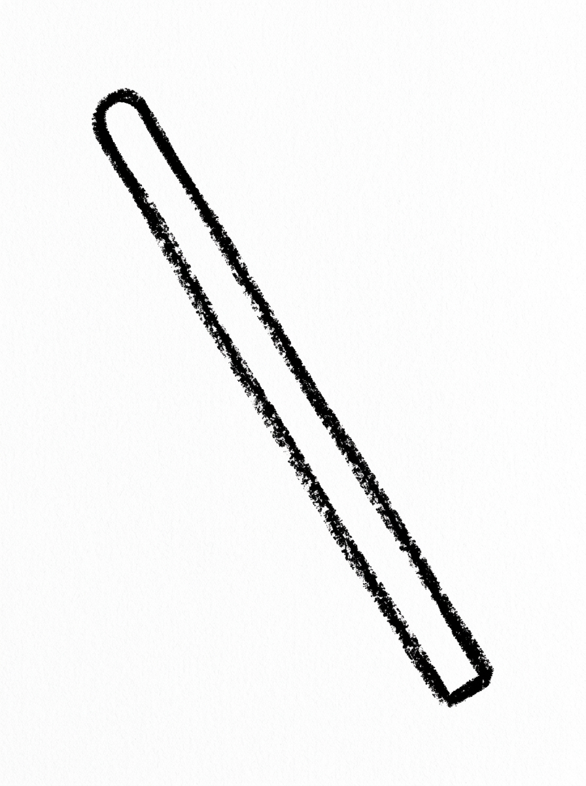
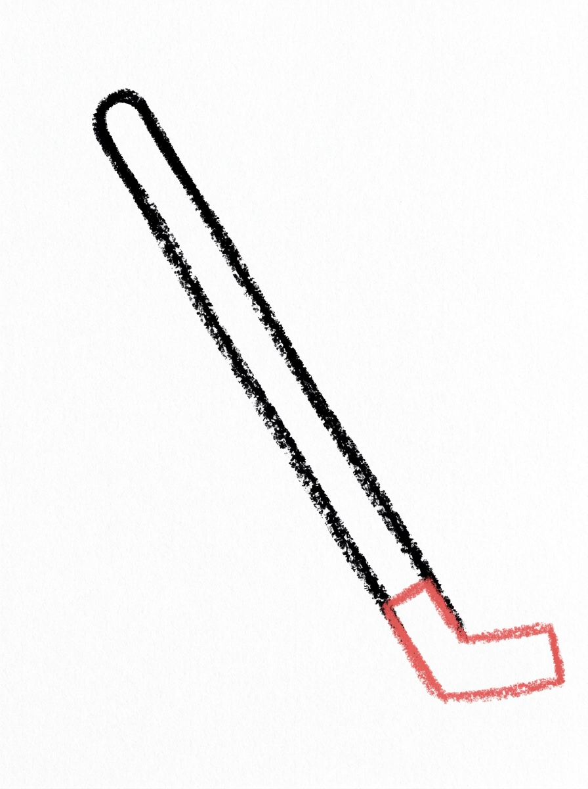
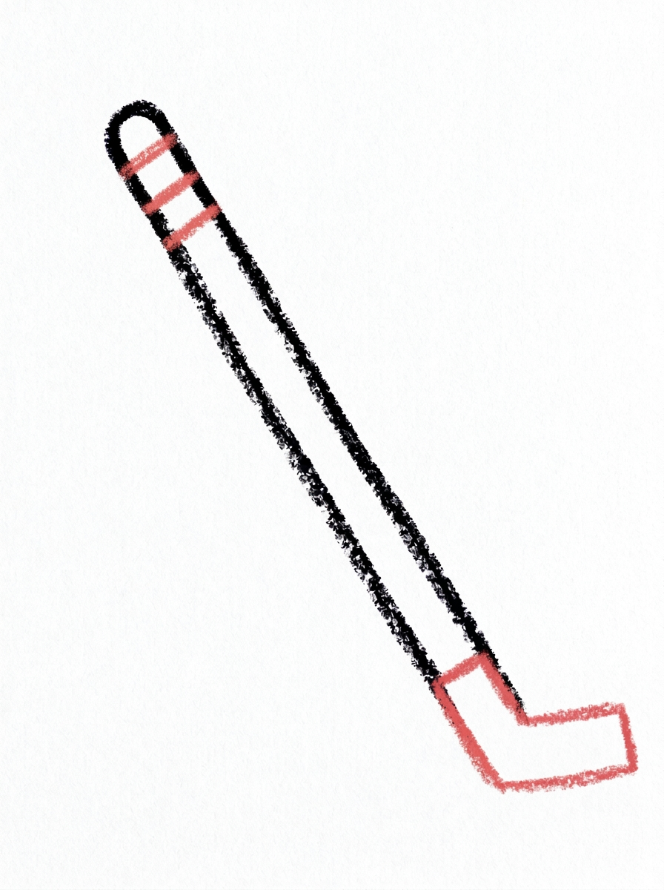
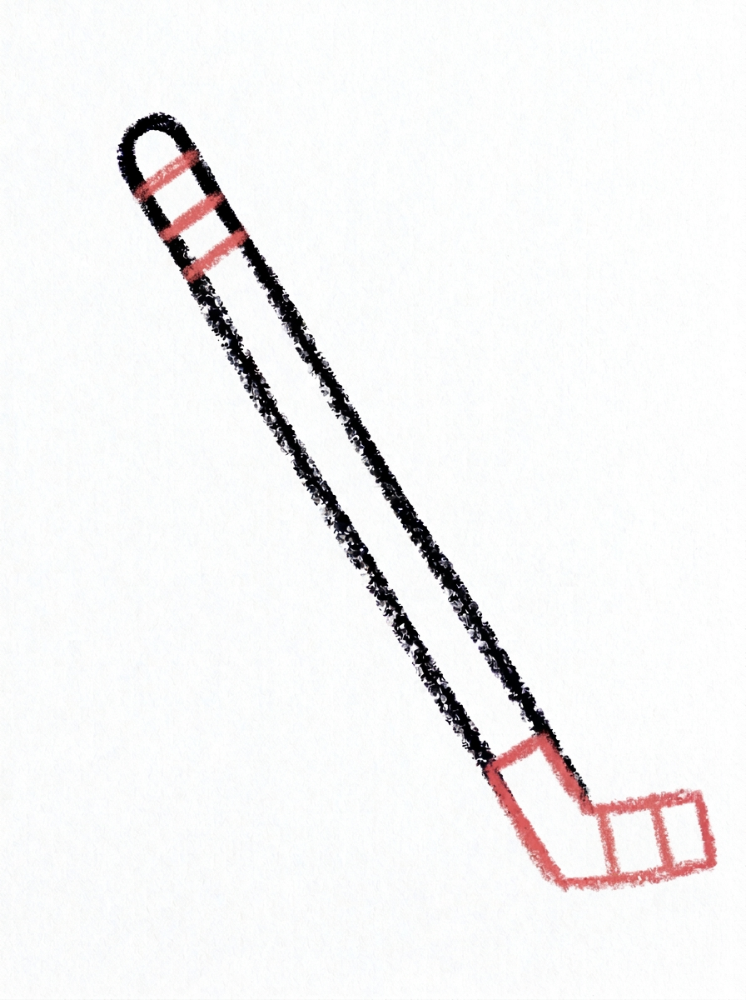
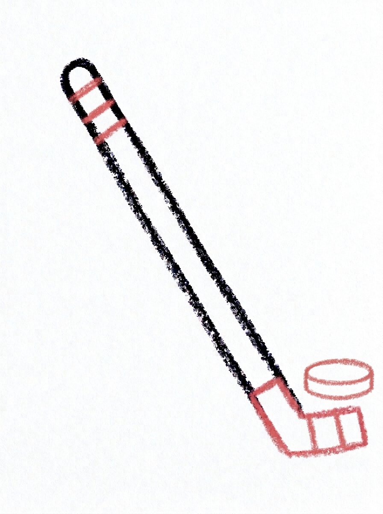
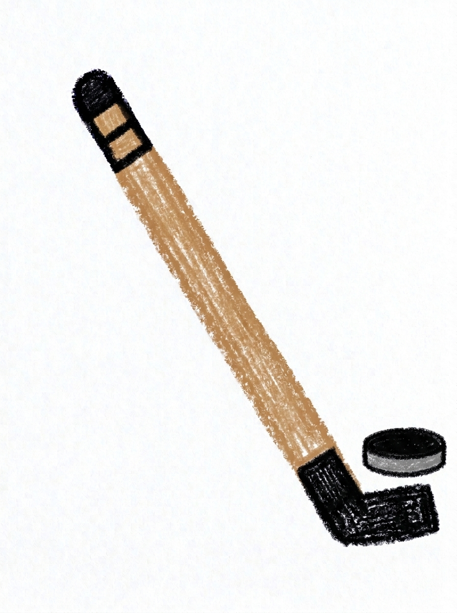

Hockey Stick Drawing for Kids How to Draw A Hockey Stick in 6 Easy Steps
Quick Answer
Draw a hockey stick in six easy steps: a long diagonal shaft, a flat blade like the foot of an L, three grip lines, two blade lines, a puck, then color. The shaft is tan brown with black ends. Made for ages 3 and up, free, with no signup needed.
At a Glance
- Subject: How to draw a hockey stick
- Ages: 3+
- Steps: 6 steps
- Time: ~15 min
- Difficulty: Easy
- Supplies: Paper, crayons
A hockey stick is one of the easiest sports drawings there is — one long leaning line, a flat blade at the bottom, and a puck to chase. If your child can draw a letter L, they're already most of the way there.
✏️ Draw Your Hockey Stick in 6 Easy Steps
One step per box — this step by step hockey stick drawing shows each new part in a different color so kids can see exactly what changed.
Step 1: The Shaft

Draw one long, thin stick shape leaning diagonally across the page, with a rounded top end. That is the shaft of the hockey stick.
Step 2: The Blade

Draw a short, flat shape at the bottom of the shaft, lying along the ground like the foot of the letter L. That is the blade.
Step 3: The Grip Lines

Draw three short lines across the top end of the shaft. That is where the hands hold the stick.
Step 4: The Blade Lines

Draw two short lines across the blade.
Step 5: The Puck

Draw one flat oval on the ground in front of the blade. That is the puck.
Step 6: Color It In

Color the shaft warm tan brown, the grip at the top and the blade black, and the puck solid black with a grey edge.
📊 Hockey Stick Drawing by Age
Every age can join in — just adjust the job.
| Age | What they can do | Tip |
|---|---|---|
| 3-4 | Draw the long leaning shaft and color the stick and puck in. | Start the shaft near the top corner of the page — a leaning stick needs the whole diagonal of the paper, not a little corner of it. |
| 4-5 | Add the blade flat at the bottom and the three grip lines across the top of the shaft. | Think of the letter L: the blade is just the foot of the L, lying flat along the ground. |
| 6+ | Finish all six steps, including the two blade lines and the puck sitting in front of the blade. | Older kids can add a goal net behind the puck and motion lines to show the shot flying in. |
🖨️ Download Your Free Hockey Stick Drawing Printable
The printable lays out all 6 steps one per box, big enough for little hands — kids draw right alongside each step.
⬇️ Open Free Printable 🖨️ Print🎁 Free printable for ages 3+
🏒 Hockey Game Page
Turn your stick and puck into a game scene: draw the ice with a few long skating lines, add a goal net behind the puck, and draw a second stick for a friend or goalie. Keep score at the top of the page — first to three goals wins. Name your team, write it under the drawing (or dictate it for a grown-up to write), and your picture is the poster for game day.
What You'll Need to Draw A Hockey Stick
All you need is a pencil, an eraser, and crayons or markers. For the colors in the tutorial, have warm tan brown ready for the shaft, black for the grip, the blade, and the puck, and grey for the puck's edge. Regular printer paper or a sketchbook both work.
What They're Learning
This tutorial practices long diagonal lines (a new direction for most kids, who default to vertical and horizontal), the letter-L shape, and counting short parallel lines — three across the grip, two across the blade. The flat oval puck introduces drawing an object lying flat, and the whole page works on planning space, since the leaning shaft needs the paper's full diagonal.
Make It Yours
Try your team's colors on the grip section, a left-handed stick drawn as a mirror image, a goalie scene with a big net behind the puck, or a winter picture with ice, snow, and skate marks around the stick. Two crossed sticks over a puck make a great hockey-party invitation or card front.
🛒 Our Favorite Drawing Supplies
These are the supplies we reach for in our own home — washable (because kids), quality paper, and enough colors to avoid fights.
As an Amazon Associate, MomYouNeedThis earns from qualifying purchases — at no extra cost to you.
💡 Hockey Stick Drawing Tips for Parents
Step 1's diagonal is the whole drawing: start the shaft high in one top corner and bring it down to the opposite bottom area, so the stick uses the full page. If your child draws it short and vertical, the blade has nowhere to lie flat — a quick erase at this stage saves frustration at step 2.
The blade in step 2 must sit flat on the 'ice' — an imaginary ground line across the bottom of the page. If it tilts up, the stick looks like it's flying. For steps 3 and 4, count the lines together (three on the grip, two on the blade) and don't worry about even spacing; tape on a real stick is never even either. The puck in step 5 goes right against the blade's tip, flat like a pancake, not round like a ball.
🏒 Hockey in the Real World
Hockey is played on ice by skaters chasing a puck — a hard rubber disk that slides and zooms across the rink. The stick does everything else: passing, shooting, and stopping the puck. Its shape has barely changed in over a hundred years of the game: a long shaft for reach, ending in a flat blade that hugs the ice.
Players wrap the top of the shaft with tape for grip and cover the blade with tape too, which is what the lines in this drawing are. Players also wear helmets and thick pads, because a flying puck is no joke. Ask your child which team their stick plays for — every stick belongs to somebody.
✋ Warm-Up: Diagonal Lines and Letter L's
Most kids draw up-down and side-to-side lines all day, but hockey sticks run diagonally, so warm up on the slant. Fill a scrap page with falling-rain lines, then slides and ramps going the other way. Follow with a round of letter L's — the stick's blade is an L lying down, and a page of them makes the real one feel easy.
A diagonal that comes out too steep or too flat is still a stick in progress: erase just the blade end and re-angle it. One honest redo of one line beats a restart, and noticing angles is a real drawing skill your child is building without knowing it.
📖 Give Your Hockey Stick a Story
A stick this ready belongs in a game. Who is holding it — your child, a future star, a very determined penguin? What is the score, and is this the moment before the big shot? A dictated sentence or two of play-by-play under the drawing turns equipment into a highlight.
For the other half of the sports shelf, the soccer ball tutorial is the obvious next page. Two sports, two drawings — and an ongoing family argument about which one wins. Take the game outdoors with how to draw a soccer ball, and give both sports a player from how to draw a person.
❓ Hockey Stick Drawing FAQs
What is the easiest way to draw a hockey stick?
Draw one long thin shaft leaning diagonally across the page, add a short flat blade at the bottom like the foot of the letter L, then mark three grip lines at the top, two lines across the blade, and a flat oval puck in front of it.
What age is this hockey stick drawing for?
It's made for ages 3 and up. The shapes are all preschool-friendly — one long line, a flat L-foot, short lines, and an oval — and younger kids can draw the shaft and color while older kids add the lines and puck themselves.
What supplies do we need?
A pencil, an eraser, paper, and crayons or markers. For colors you'll want warm tan brown for the shaft, black for the grip, blade, and puck, and grey for the puck's edge.
Is the printable really free?
Yes — every printable on MomYouNeedThis is 100% free, including this hockey stick drawing tutorial. There is no signup, no email, and no catch — just download, print, and draw.
How do I print it?
Open the PDF and choose Print, then set the scale to 100% (sometimes called Actual Size) so the steps print at full size. The tutorial is designed for regular US Letter paper, and plain printer paper works perfectly.
Why does the hockey stick lean?
Because a stick standing straight up and down can't reach the ice. The lean matches how a player actually holds it — hands up top, blade flat on the ground, ready to move the puck.
What is the flat part at the bottom called?
The blade — it's the short flat part at the bottom of the shaft that lies along the ground. It's the part that actually touches the puck, which is why this tutorial draws it flat like the foot of the letter L.
Can I draw the stick facing the other way?
Yes — that's how left-handed players hold it. Draw the same steps as a mirror image: shaft leaning the other way, blade pointing the other direction. Everything else — grip lines, blade lines, puck — stays exactly the same.
📚 Keep Exploring
- ✏️ All 76 Drawing Tutorials 76 free step-by-step drawing tutorials for kids.
- 🎀 Cute Coloring Free cute coloring pages for kids.
- ✏️ Drawing Practice Free printable drawing pre-writing worksheet for toddlers.